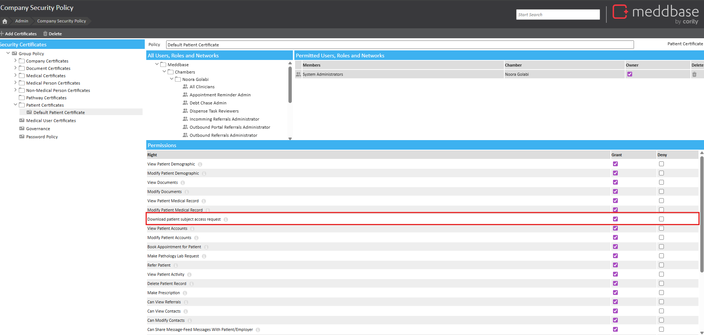
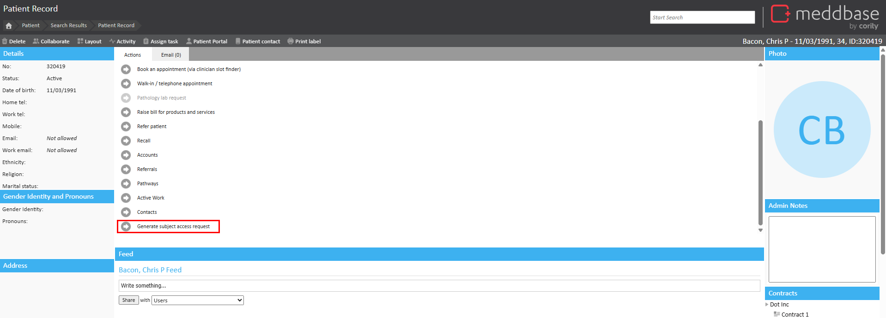
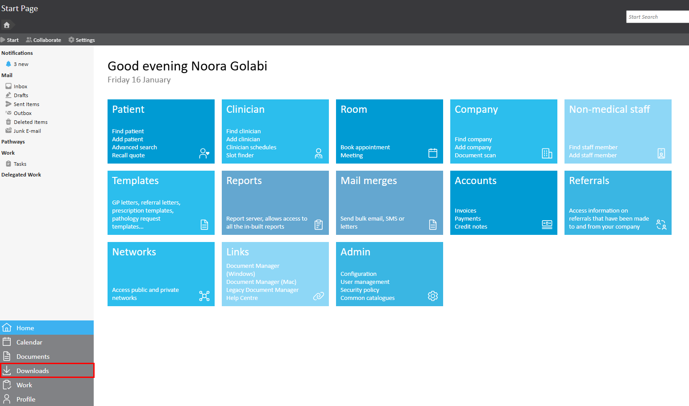
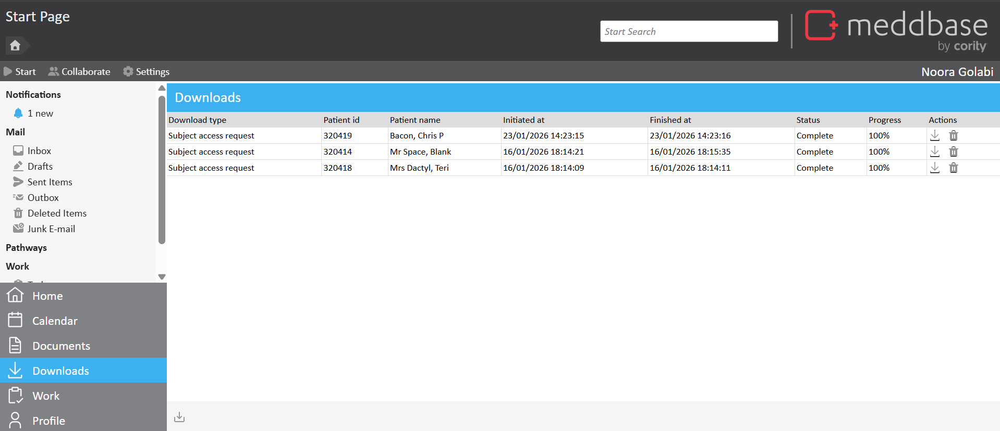
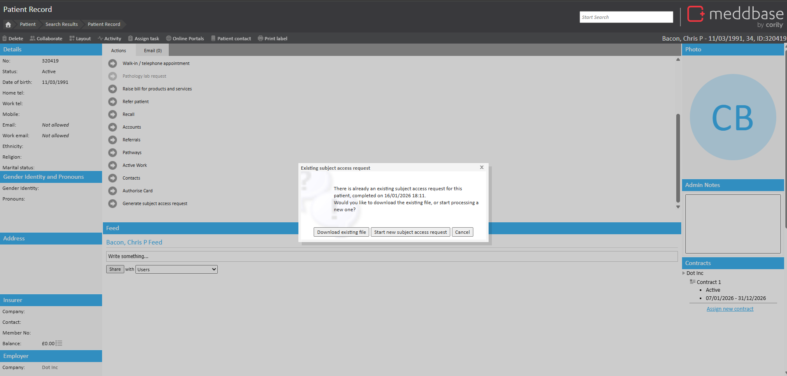
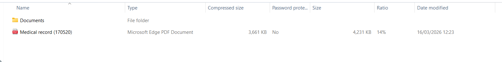
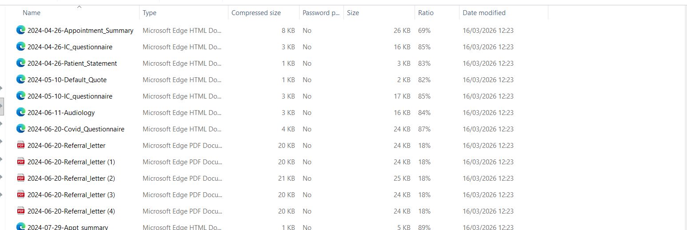

This article explains how to generate and download the complete Patient Record, including all associated documents, in response to a Subject Access Request (SAR). The download is a .zip file, which includes a PDF of the patient medical record and a folder containing all documents attached to the record.
To enable generating and downloading a complete Patient Record for a Subject Access Request in your Chamber, please contact support or your account manager.
This article describes how to enable patient Subject Access Requests in your chamber and how to generate and download the record.
SAR download must be enabled in Meddbase in order to be available in the patient record. To enable SAR download:

When enabled, the patient medical record can be generated in response to a SAR from the Patient Record page. To generate the patient medical record:

The duration of the request varies depending on the size of the medical history record and the number of documents attached to the patient record.


Subject Access Requests are automatically deleted after 28 days.
If you attempt to generate a SAR for a patient that you or another user has previously requested, a message will indicate that a request already exists.

Click Download existing file to download the existing SAR. The previously generated SAR will download automatically from the Patient Record page.
Click Start new subject access request to generate a new SAR. A new SAR will generate and can be downloaded from the Downloads page when complete.
The documents download as a .zip file that includes a PDF of the complete patient medical record and a folder containing all documents attached to the record.

